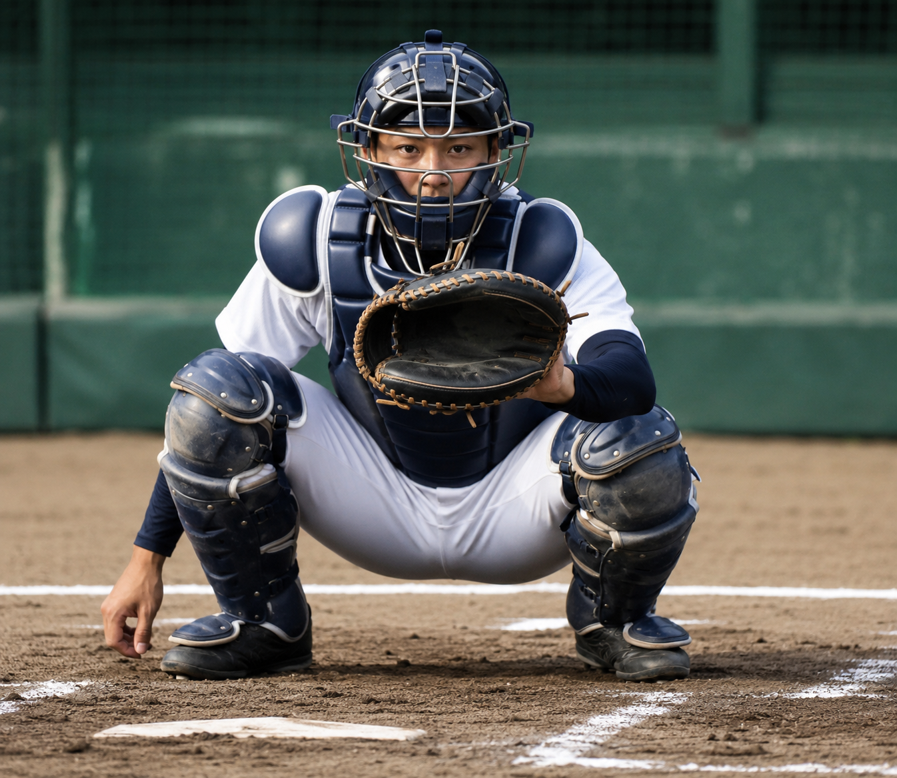
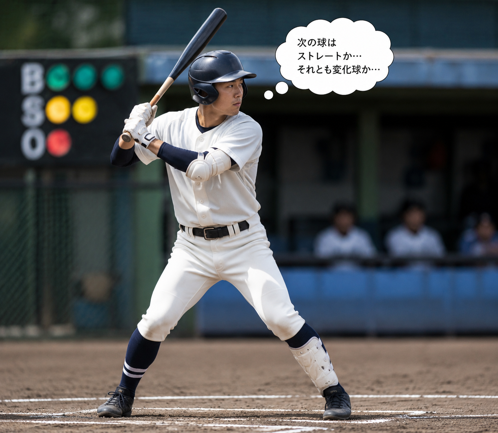

優れた変化球を持っていても、それを活かす「配球」の知識がなければ打者を打ち取ることはできません。ここでは、NPBやMLBのレジェンドたちが実践してきた、打者の心理を読み解き、球種とコースを組み合わせて打ち取る高度な戦略について解説します。
1. 配球の基本：ストレートを活かす変化球

配球の最も基本的な考え方は、「ストレート（速球）をいかに速く見せるか」、あるいは「変化球をいかにストレートの軌道から曲げるか」にあります。すべての球種の基本となるストレートの質が良ければ良いほど、変化球の威力は倍増します。初球に何を投げるか、カウントを整える球、そして勝負を決める「ウイニングショット」という役割分担を明確にすることが配球の第一歩です。
2. 打者の心理と錯覚を利用する

打者は常に「次に来る球」を予測して打席に立っています。配球とは、この予測を裏切る作業とも言えます。例えば、インコース（内角）に厳しいストレートを見せて打者の意識を内側に向けさせた後、アウトコース（外角）に逃げるスライダーを投げることで、打者の踏み込みを躊躇させることができます。このように空間（コース）と時間（緩急）を操ることで、打者の脳内に錯覚を起こさせます。
配球を構成する重要な要素
一流のバッテリーが配球を組み立てる際、主に以下の要素を総合的に判断しています。
- カウントの状況： 有利（ストライク先行）か不利（ボール先行）かによる攻め方の変化。
- 打者のタイプと弱点： 早打ちか待球型か、または特定のコース・球種への強弱。
- 試合展開とランナーの有無： ゴロを打たせてゲッツーを狙うか、絶対に三振が欲しい場面か。